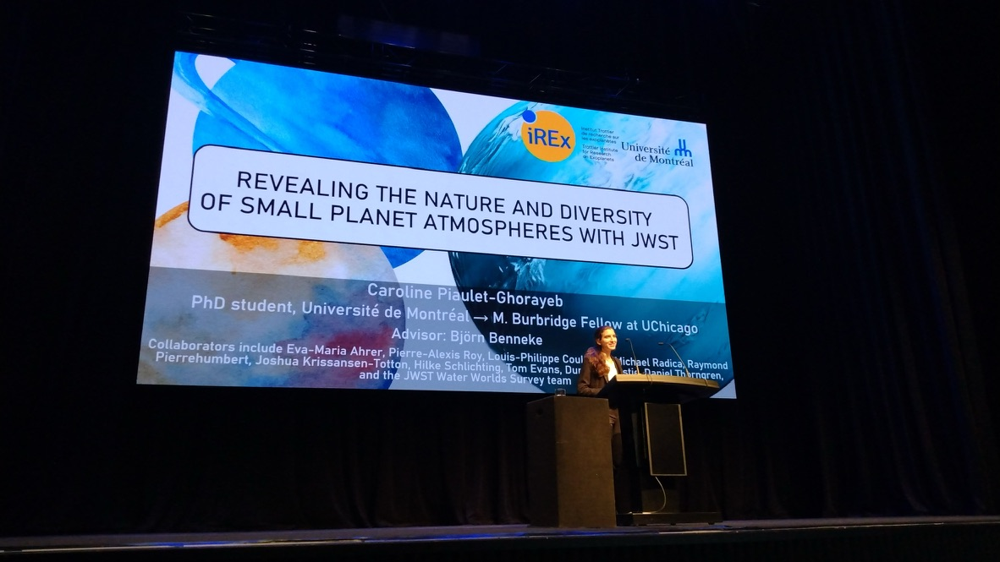

Decoding Exoplanets.
I use space- and ground-based telescopes as well as theoretical modeling to search for
and characterize the atmospheres of planets ranging from rocky exo-Earths to gas giants.
I am particularly interested in figuring out how to relate observations of exoplanet atmospheres
and their stellar environments to planet formation, evolution, and chemistry.
